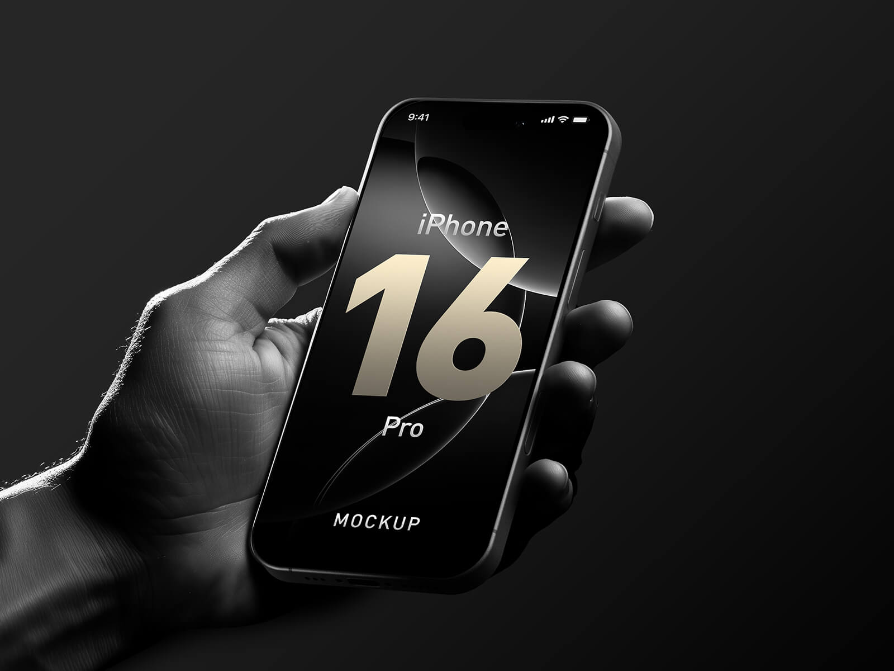
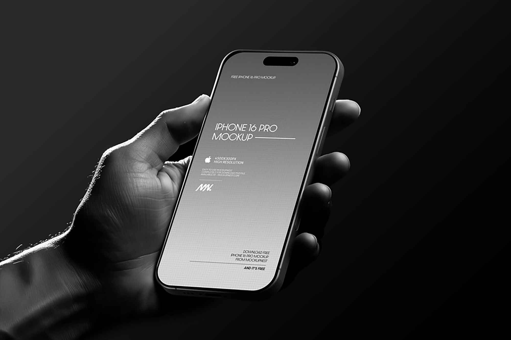
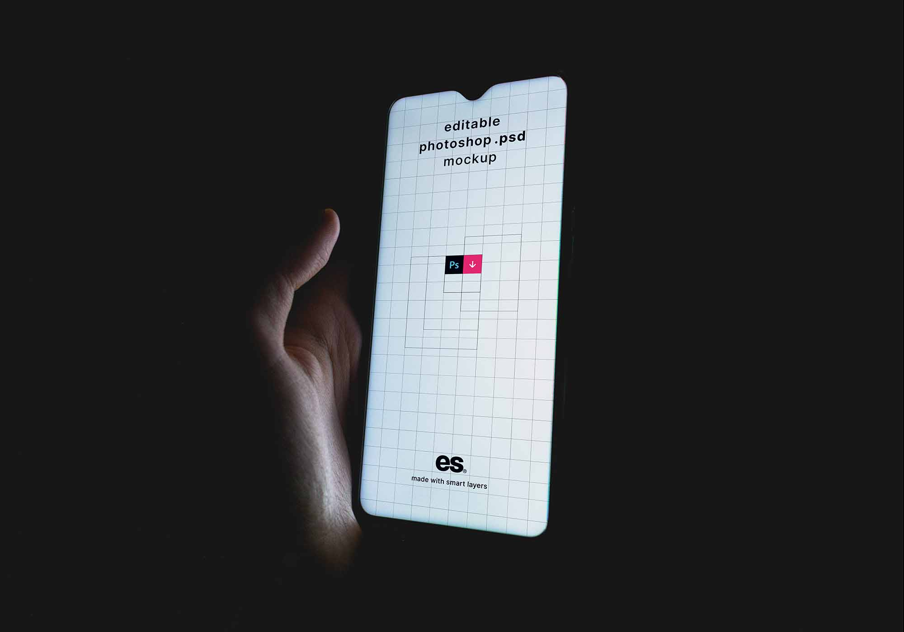

End-to-end mobile trading experience for Axi's retail platform — including a compliant onboarding flow across 180+ jurisdictions and full trading interfaces for Forex, Crypto, Commodities, and CFDs on iOS and Android.
ATP Mobile is Axi's flagship retail trading app, delivering full-featured Forex, CFD, and Crypto trading on iOS and Android. I was the lead designer on the end-to-end product — from the onboarding flow through to the core trading experience — working across 4 engineering teams spanning the UK, India, and the Philippines.
ATP Mobile — home screen, markets list, and portfolio summary across iOS and Android
One of the most complex design challenges was creating a single onboarding flow that satisfies regulatory requirements across more than 180 countries simultaneously — including FCA (UK), CySEC (Cyprus), ASIC (Australia), DFSA (Dubai), and FMA (New Zealand).
Working with compliance, legal, and product teams, we designed an adaptive onboarding system that dynamically adjusts the flow based on the user's jurisdiction — surfacing only the required steps for each regulatory environment without creating a fragmented or confusing experience for the user.

Onboarding — adaptive flow dynamically surfaces only the steps required for each regulatory jurisdiction
The core trading experience covers Forex, Commodities, Indices, Crypto, and Shares. I worked with modular design principles to ensure UI consistency across markets while allowing for the distinct information needs of each asset class.

Trading experience — charting, order entry, and position management consistent across all asset classes

Localisation — 12 languages including full RTL layout support for Arabic and Hebrew markets
Next case study